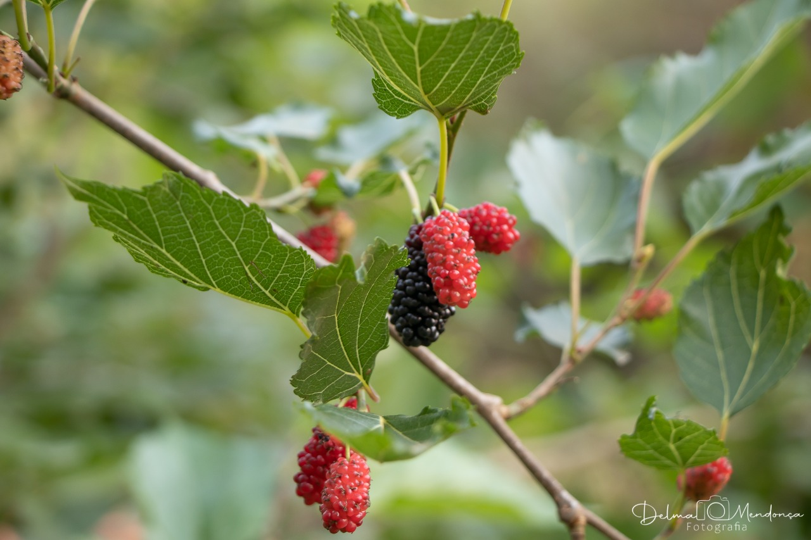
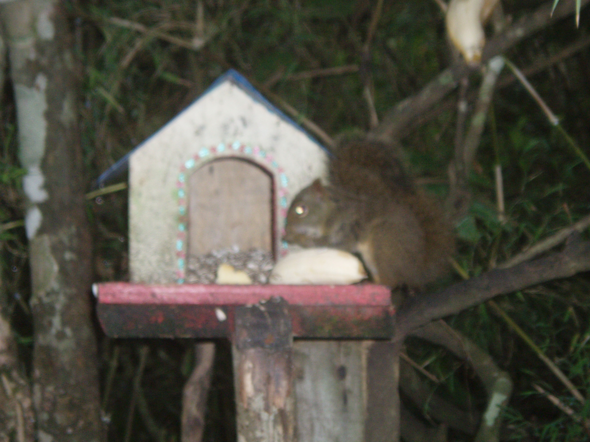

Flora
A vegetação é parte essencial da paisagem dos Chalés Biguá. Entre árvores, plantas nativas e diferentes tons de verde, a natureza compõe um ambiente vivo, que muda com as estações e revela novos detalhes a cada visita. Um espaço para apreciar a beleza da vegetação, respirar o ar puro e se reconectar com a tranquilidade da vida ao ar livre.

Fauna
A vida silvestre também faz parte da experiência nos Chalés Biguá. O ambiente natural abriga diferentes espécies de animais e aves, que podem ser observados em seus próprios ritmos e habitats. Com um pouco de atenção e contemplação, é possível descobrir encontros especiais e perceber a riqueza da vida que compartilha esse espaço conosco.